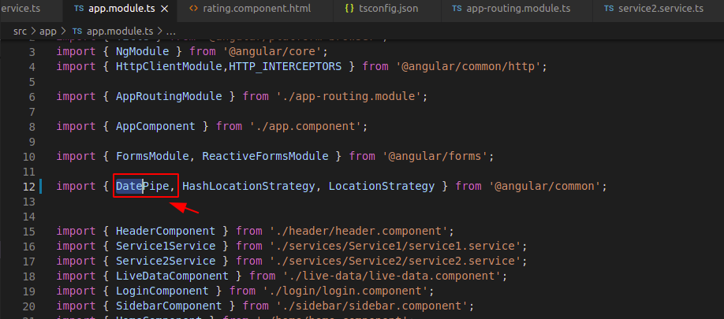
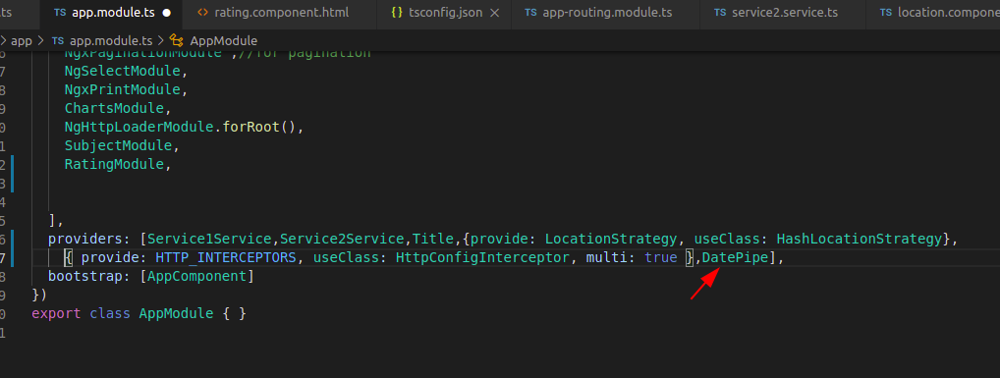
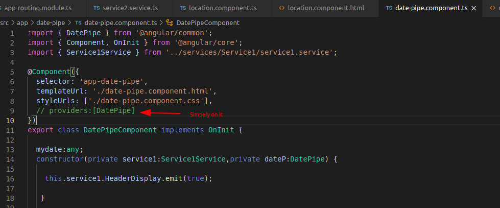

Note: In this page's ts file a date pipe is being used that inbuilt in angular.
Note: Never forget to register date pipe in that's component module file. Here this component is a part of app.module.ts so i am
registering this date pipe in app.module.ts like this.(other wise this will throw an error)


Note: If you don't want to register date pipe in module file like above, you have an another option.
